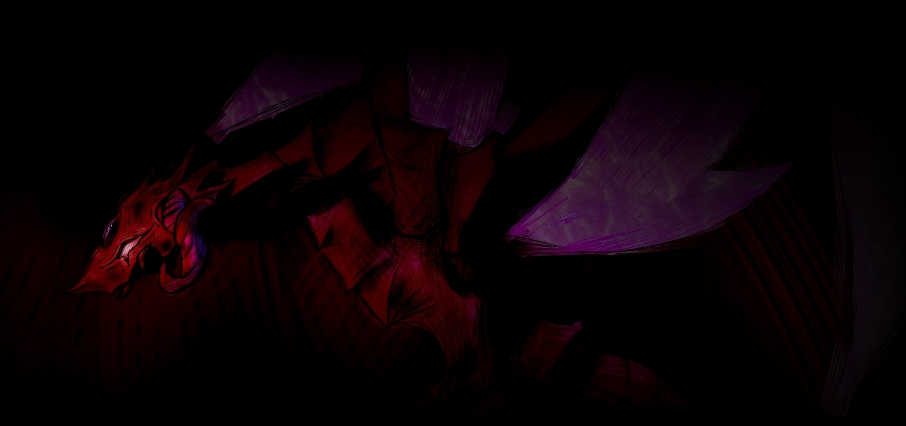

Ibalia - Iba - Ибалиа
Wach auf... wach auf...
Ibalia,... wach auf...
...
Ibalia, erwache nun endlich!
Der Göttertöter ist gekommen um Lady Scarlet zu töten!
...
Bitte, Ibalia...
...bitte...
...
Alles still.
Alles wurde still, es stört mich.
Diese Ruhe, sie beißt mich, Ich will erwachen.
Doch es geht nicht.
"Bin ich gestorben?" sagte ich zu mir selbst.
Ich spürte es, den stechenden Schmerz der die Angst darstellt.
Angst.
Ein Unheilsvoller der Angst verspürte.
Eine Bestie aus Stahl die gefühle hatte.
Bin ich so weit gesunken?
Und ich spürte es, ein Schmerzen, welches mein Kopf durchdrung.
Erwache ich? oder sterbe ich hier, in dieser Dunkelheit?
Ich sterbe, oder?
...Allein...
in dieser Dunkelheit...
...doch sah ich nun ein Licht?
Hoffnung?...
Oder nur ein weiteres Zeichen meiner sterblichkeit?...
es nützt nichts... Ich will brüllen...
jedoch diese Stille...
Sie nagt an mir...
Was wird nun aus mir?
Blind, Stumm, Gefühls- und Geruchslos?
...
Ich fühlte etwas...
Wasser? Regen?...
...Tränen?
Weine ich?
Habe ich tatsächlich Todesängste?
Ich, ein Wesen gemacht für den Krieg?
Ich fühlte es nun.
Gefühle, die ich mein Leben lang unterdrückte, Gefühle die ich als unnötig empfand.
Sie quollen zuguterletzt in meinen letzten Momenten auf, nur um mich heimzujagen.
Und nun endlich sah ich die Welt wieder mit meinen eigenen Augen.
Alles was ich kannte zerbrach vor meinen Augen.
Alles... zerstört...
Alles... was wir über die jahrhunderte erbaut haben... Zunichte.
Mir bleibt nichts.
Lady Scarlet?...
Ich wagte es nicht, mich von diesem Trümmerhaufen zu entfernen, doch etwas rufte nach mir... ich weiß was es war.
Was ist mit mir Geschehen?
Ich erinnere mich nicht...
...
Klaffende Wunden bedeckten meinen Oberkörper... War es ein Wunder, dass ich überleben konnte?
Jeder meiner Schritte erklingte immer lauter je näher ich den toren zu den Hallen kam.
Diese Stille...
Sie wuchs größer...
Meine Atemzüge, Meine Schritte...
... die einzigen Dinge, die die Stille durchdrangten...
Bin ich tatsächlich noch am Leben?
Der Himmel war Blutrot.
Die Gänge des Schlosses spiegelten die Atmosphäre und färbten die Hallen dank einiger Blutpfützen zu einer Horrorscene.
Ich sah immer wieder die Leichen gefallener Unheilsvoller und die Überreste von denen, die uns Herausforderten.
Sie alle starben einen qualvollen Tod,
Unheilsvoller oder Mensch, es war Egal.
Sie alle starben so oder so...
Ich merkte, wie ihre Leichen immer mehr wurden...
Das Erste Tor... ein Haufen von menschlichen Überresten in den Innenhallen und ein größerer von Unheilsvollen an der Außenhalle.
Meine Geschwister schienen dieses Tor stark beschützen zu wollen.
Ich sah keine anzeichen von Überlebenden...
Alle sind tot...
Alle...
Ich fühle mich...
Unwohl?
Ich will weinen...
aber warum?
Sie waren alle nur Massen-produktions Einheiten, sie hatten weder persönlichkeit, noch jegliche anzeichen von Gefühle.
Sie waren alles nur Hüllen, die auf Befehle hörten.
Es war doch nur selbstverständlich, dass sie ihre leben für ihre Geschwister aufgeben würden...
doch... es rührt mich?
Sie alle wollten mich, eine einfache Kriegsbestie, vor einer unbekannten Macht beschützen.
Bin ich tatsächlich so schwach?
Ich ging weiter... der Hof liegt nicht mehr weit...
Ich wusste was auf mich warten wird, jedoch ging ich weiter...
Weiter, immer weiter...
Letztendlich kam ich an, der Schlosshof von Lady Scarlet...
Ich wagte es nicht mich viel umzusehen, trotzdem traf mich das Unglück mit meinen eigenen Augen immer wieder.
Ich sah zwei Silhouetten auf der mitte des Schlosshofes.
Ich will es nicht glauben.
Ich trat nähren und spürte langsam, das meine Wunden mehr als nur klaffend waren.
Physisch und psychisch war ich am Ende.
Lady Scarlet... ist tot.
Alles, meine Gründe, mein Sinn...
Alles starb mit ihr...
Neben ihr lag die Leiche eines Mannes, Schlank, weißes Haar... War es der Göttertöter?
Nichtmal er ist am Leben geblieben?...
Ich habe niemanden, den ich diese Schuld geben kann...
Meine einzige Aufgabe habe ich nicht erfüllt...
...
Ich will nicht mehr...
Ich will nurnoch...
...Weinen...
...Kreischen...
...Schlafen...
...und alles schien zu enden...
Das glaubte ich jedoch...